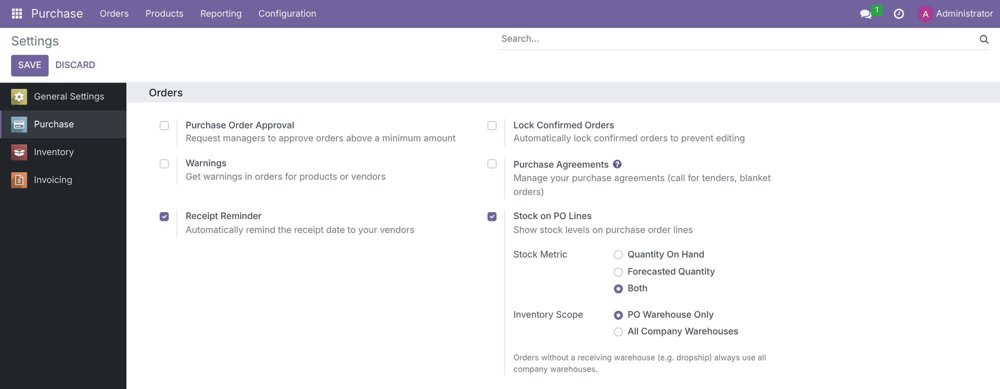
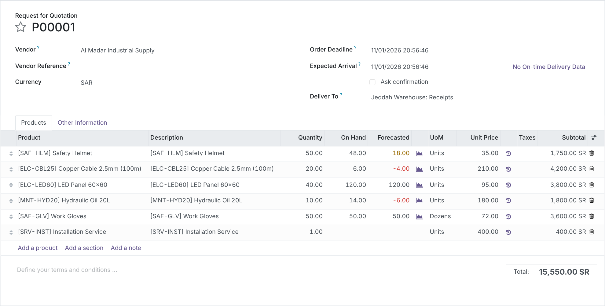
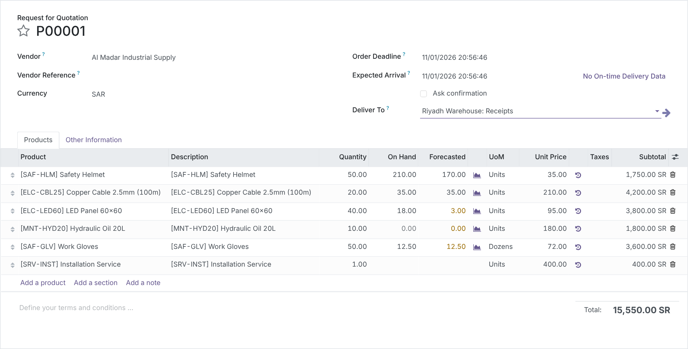
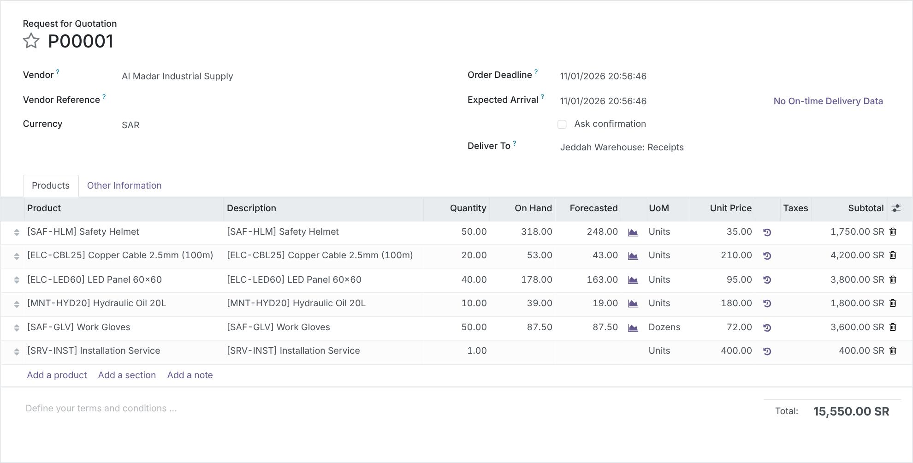
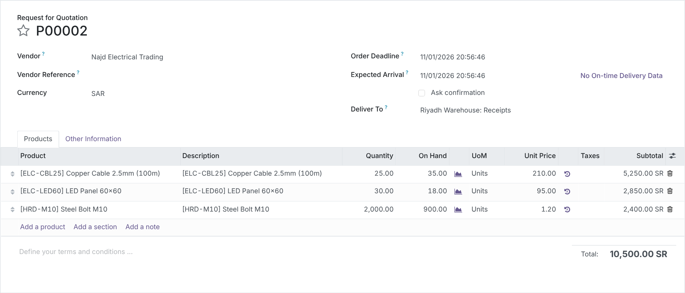
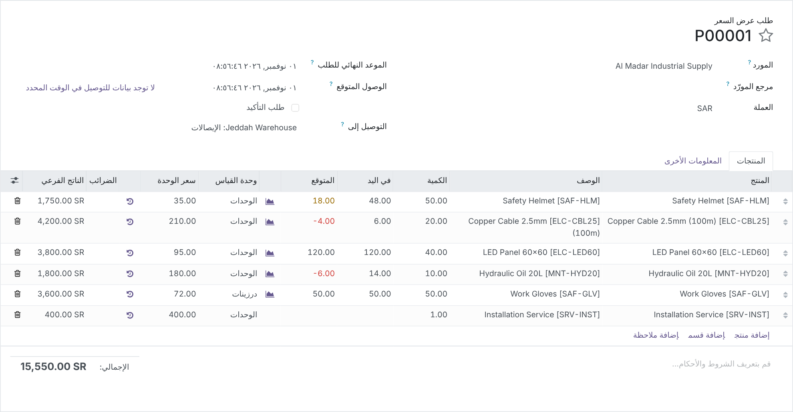
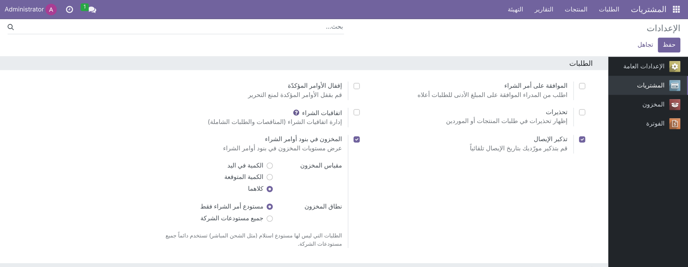

See On Hand and Forecasted stock right next to the quantity on every purchase order line, for the receiving warehouse or for the whole company. Buyers order what is actually missing, without leaving the RFQ.
A buyer preparing an RFQ needs one answer per line: how much do we already have, and how much will we have?
Four steps, no new menus to learn.
Screenshots use demo data for Gulf Supplies Co.: three warehouses (Jeddah, Riyadh, Dammam), stock in each, open customer deliveries from Jeddah and Riyadh, and two draft RFQs.
Go to Purchase › Configuration › Settings › Orders and tick Stock on PO Lines. Then pick the Stock Metric (Quantity On Hand, Forecasted Quantity or Both) and the Inventory Scope (PO Warehouse Only or All Company Warehouses). Values are stored on the company, so each company of a multi-company database can be set differently.

The On Hand and Forecasted columns sit right after Quantity. Here P00001 is delivered to the Jeddah Warehouse: the Copper Cable has 6 on hand but 10 already promised to customers, so the forecast is −4.00 in red. The Safety Helmet forecast (18) is below the 50 ordered, so it shows in amber. Work Gloves are bought in Dozens, and the 600 units in stock read as 50.00. The service line stays blank.

Switch Deliver To from Jeddah to Riyadh Warehouse: Receipts and every line recalculates before you save. The same RFQ now tells a different story: plenty of Copper Cable (35) and helmets, but LED Panels drop to a forecast of 3 and Hydraulic Oil to 0. Changing a line’s product or unit of measure updates it the same way.

With All Company Warehouses, the columns add up every warehouse of the order’s company. Useful when stock is rebalanced by internal transfers rather than bought per site.

| On hand | Jeddah | Riyadh | Dammam | Company-wide |
|---|---|---|---|---|
| Safety Helmet | 48 | 210 | 60 | 318 |
| Copper Cable 2.5mm (100m) | 6 | 35 | 12 | 53 |
| LED Panel 60×60 | 120 | 18 | 40 | 178 |
| Hydraulic Oil 20L | 14 | 0 | 25 | 39 |
| Work Gloves (in Dozens) | 50 | 12.5 | 25 | 87.5 |
Set Stock Metric to Quantity On Hand and the Forecasted column disappears from every order, or the other way round. Each column is also optional, so a user can hide it from the column picker without touching the settings. Untick Stock on PO Lines and both columns are gone.

Every label, option and help text ships in Arabic (ar_001). With an Arabic user the purchase order mirrors right to left and the stock columns keep their red and amber flags.


Colour tells you where to look first.
What happens in the situations that usually break stock figures.
No new groups or record rules; standard Purchase access applies.
| Who | Sees / can do |
|---|---|
| Purchase / User | The On Hand and Forecasted columns on the orders they can open, with or without Inventory rights. |
| Purchase / Administrator | Changes Stock on PO Lines, Stock Metric and Inventory Scope in Purchase settings. |
| Multi-company | Settings are per company; figures only come from the warehouses of the order’s company. |
| Odoo version | 16.0, Community and Enterprise |
| Depends on | purchase_stock |
| Python dependency | None |
| Settings | Purchase › Configuration › Settings › Orders › Stock on PO Lines |
| Views | Purchase order form: line list and line form |
| Models | res.company, res.config.settings, purchase.order, purchase.order.line (computed, non-stored fields) |
| Performance | One batched stock lookup per company and warehouse scope; query count does not grow with the number of lines |
| Automated tests | 15: warehouse vs company scope, forecast with deliveries and receipts, UoM conversion, services, metric flags, dropship fallback, multi-company, mixed batches, live form updates, settings, Purchase-only user, query counts |
| Translations | Arabic (ar_001), right-to-left ready |
| License | LGPL-3 |
Questions, a demo, or an adaptation to your own process? Get in touch.
✉ ibrahim.yahiah@gmail.com LinkedIn: Ibrahim YahiaAuthor: Ibrahim Yahia · License: LGPL-3